Heading west from Tbilisi: first stop at the cave city of Uplistsikhe near Gori.
Uplistsikhe: “Fortress of God” – the oldest of Georgia’s three cave cities, set on a rocky plateau above the Mtkvari (Kura) river about 10 km east of Gori. First settled as early as the Bronze Age, the rock-hewn town proper took shape from the 6th century BC onwards and, as a trading post on the Silk Road, grew to as many as 20,000 inhabitants. Before Christianization, pagan gods were worshipped here – a sun god, an earth god, a god of the underworld and a water god, each with its own temple and priesthood.
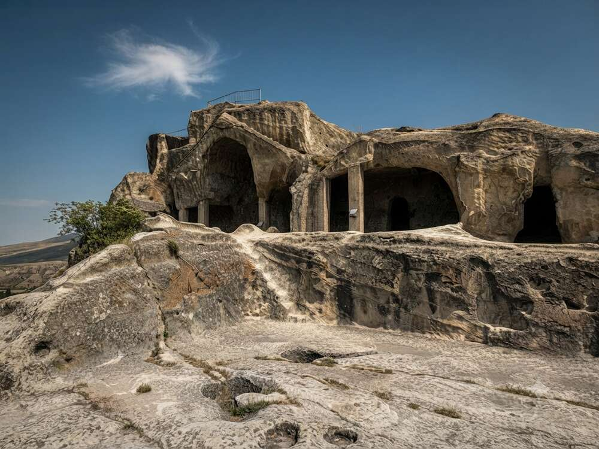
The central rock facade with its columned halls carved out of the sandstone – among them, presumably, Tamaris Darbasi (“Tamar’s Hall”), the largest surviving room of the complex with its coffered vaulted ceiling.
Golden age and decline: Between the 9th and 11th centuries Uplistsikhe reached its peak as a political and religious center of Georgia, complete with an amphitheater, a pharmacy, bakeries and a sophisticated system of channels. When the Georgians recaptured Tbilisi in 1122, Uplistsikhe abruptly lost its importance; in the 13th century the Mongol commander Ögedei Khan largely destroyed the city. The last inhabitants only left at the end of the 18th century – and an earthquake in 1920 caused many additional caves to collapse.
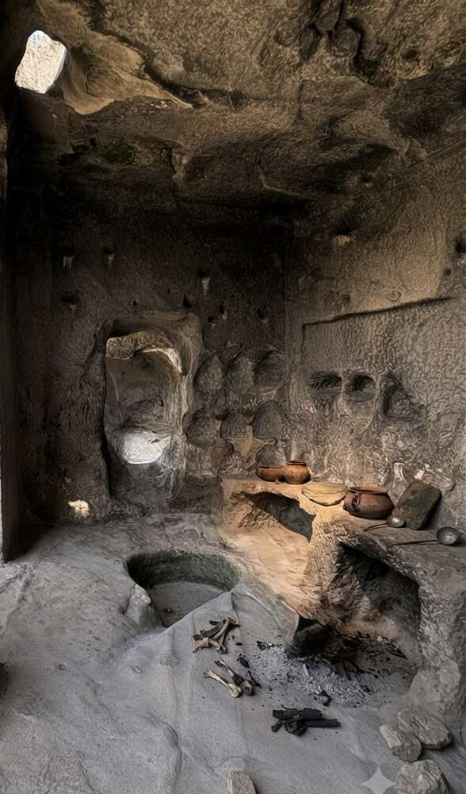
One of the better-preserved dwelling caves with a fireplace, clay jars and storage ledges cut into the rock – probably part of a living or kitchen area. Details like these give a far more tangible sense of everyday life than the bare facades alone.
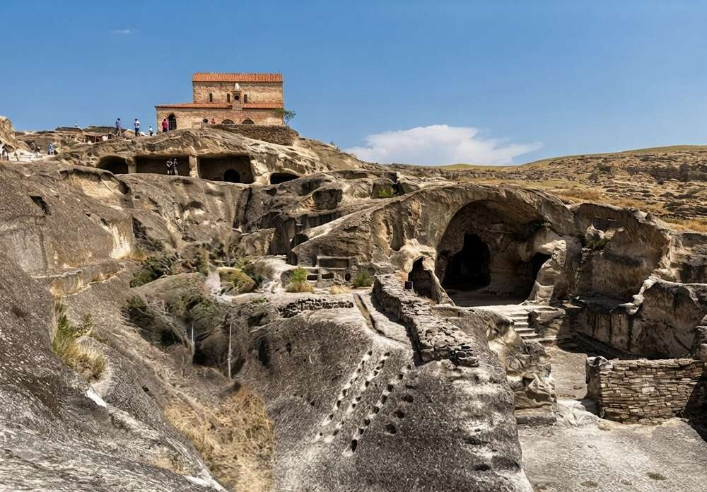
View across the entire plateau up to the three-nave Prince’s Church (a basilica, 9th/10th century) at its highest point – the landmark of Uplistsikhe, built when the city had already been Christianized, its interior walls once entirely covered in frescoes.
Secret tunnel: A tunnel roughly 50 meters long and about 3 meters in diameter, driven through the rock, once connected the upper town with the riverbank – officially for the water supply, but in the event of a siege it could also serve as an unnoticed escape route. Anyone climbing through the site’s narrow, well-worn rock passages today gets a good sense of just how claustrophobic that must have been.
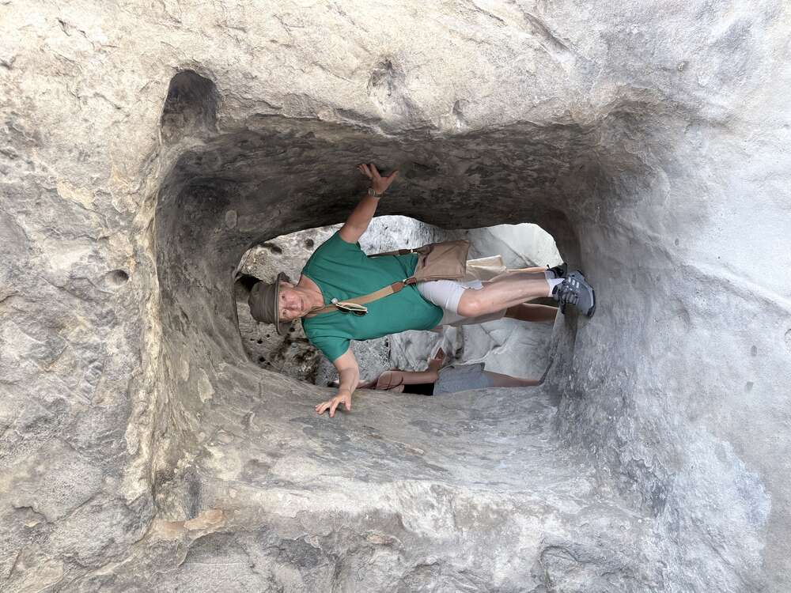
Through one of the narrow rock passages connecting the individual cave complexes – in places so tight that you have to squeeze through sideways.
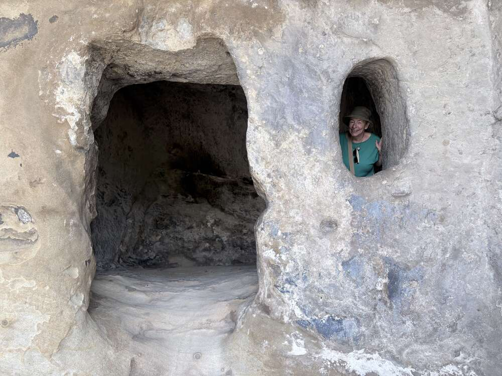
Small square rock windows like this one originally served as light slits and smoke vents for individual dwelling caves – today they are a popular photo spot.
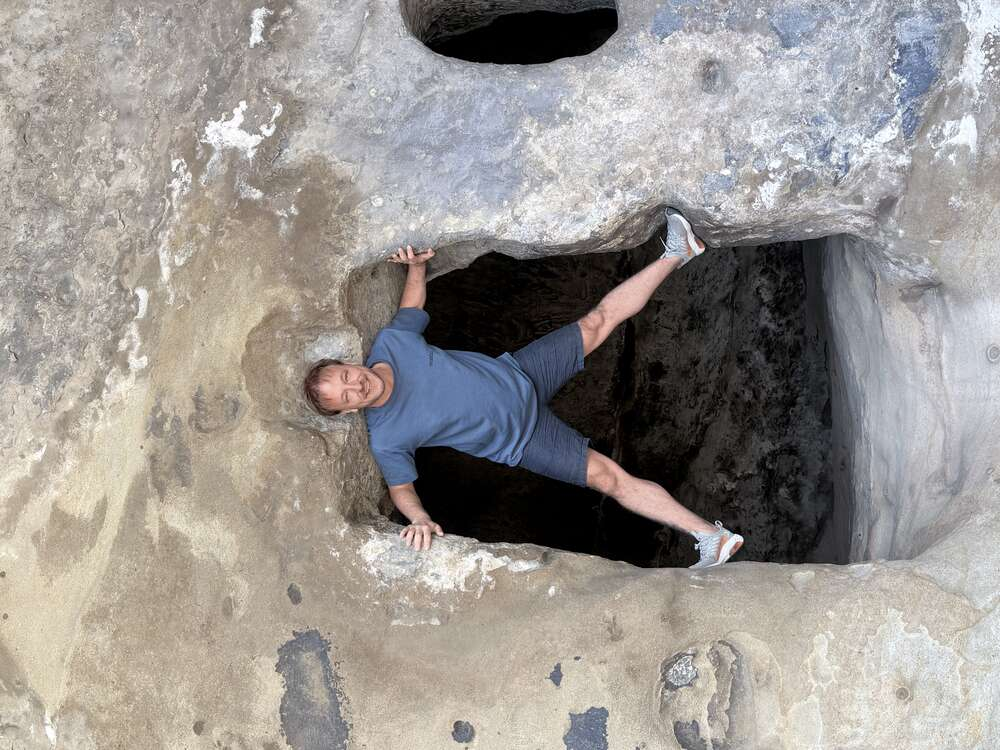
The cave city also offers plenty of opportunity for a bit of climbing fun – the soft sandstone niches practically invite you to clamber around.
Joseph Stalin Museum: Gori, about a 25-minute drive from Uplistsikhe, is the birthplace of Ioseb Besarionis dze Jughashvili – better known by his revolutionary alias Stalin. First set up in his birth house in 1937, the large museum palace in “Stalinist Gothic” style was built from 1951 onwards and ceremonially opened in 1957, four years after Stalin’s death. The museum presents his life in chronologically arranged halls – from his childhood in Gori to his rise to become the most powerful man in the Soviet Union.
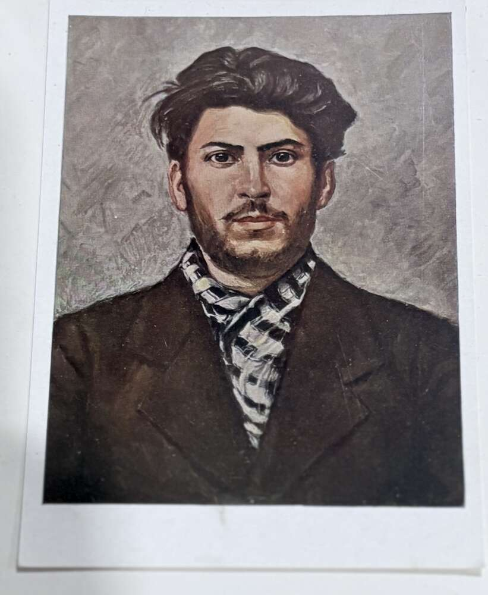
Portrait of the young Ioseb Jughashvili from the early halls – still a bohemian-looking revolutionary with a neckerchief, long before he adopted the name “Stalin” (“man of steel”).
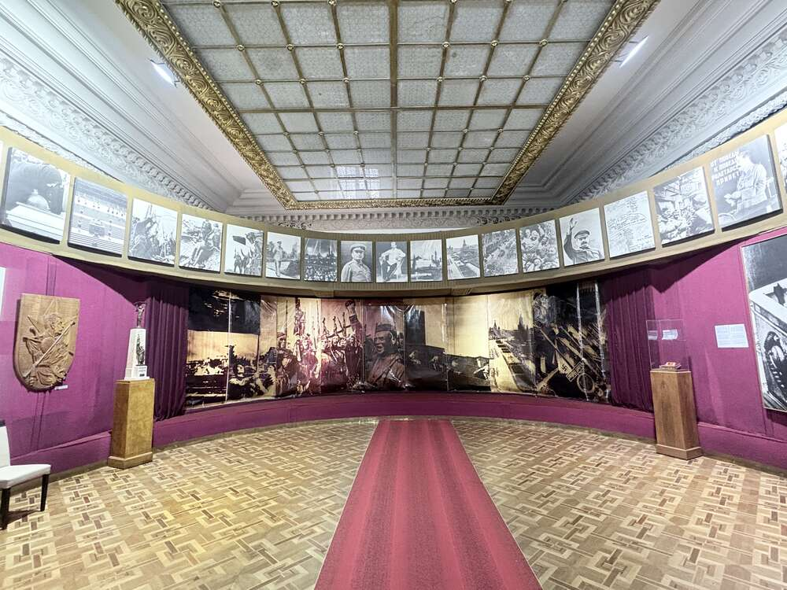
One of the large exhibition halls: a continuous frieze of black-and-white photographs below the ceiling, and beneath it monumental, partly gilded murals on the “Great Patriotic War”. The entire museum building is single-mindedly designed for glorification – you will search the regular exhibition in vain for any critical reckoning with the millions of victims of purges, deportations and famines.
Propaganda art: Numerous woven tapestries and paintings in the style of “Socialist Realism” dominate the halls – Stalin as military leader, as provider for the people, as friend of children. This visual language was an integral part of the cult built around his person during his lifetime, and the museum continues to display it without comment.
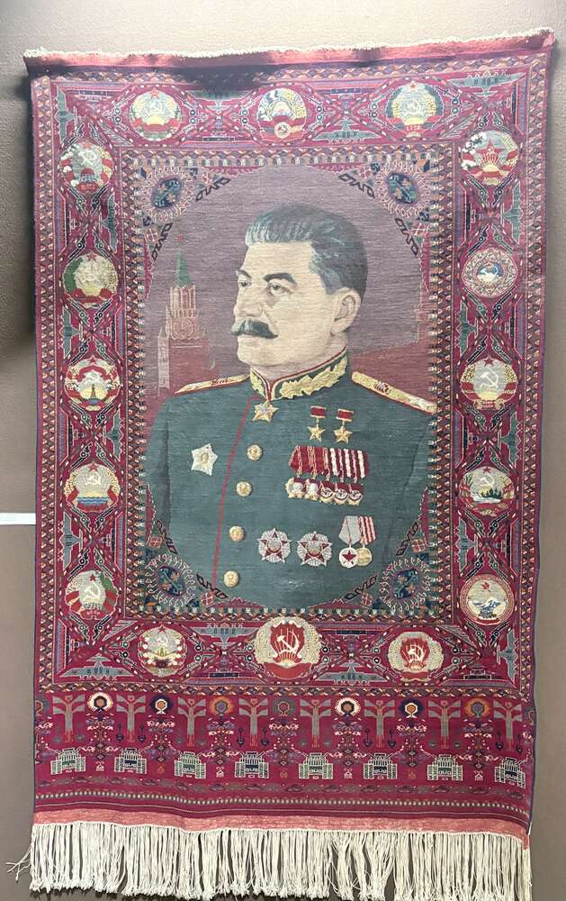
Woven tapestry showing Stalin in a marshal’s uniform, framed by the coats of arms of the Soviet republics – a classic example of Caucasian carpet weaving, here placed entirely in the service of the personality cult.
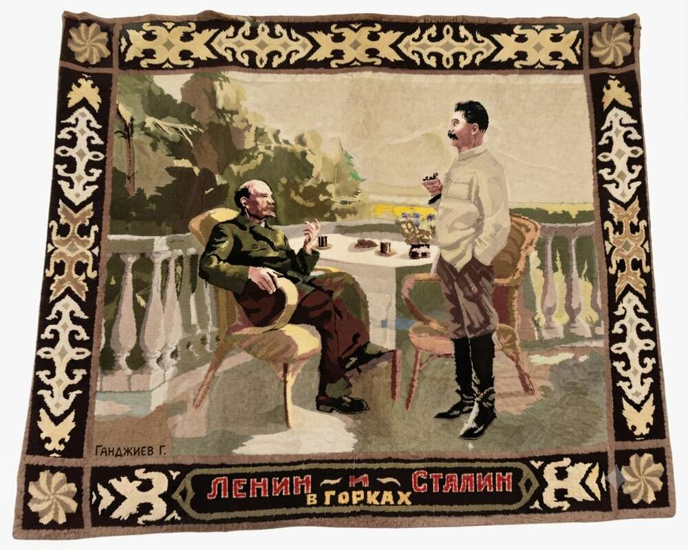
“Lenin and Stalin in Gorki” – one of countless depictions of a close personal bond between the two men, which historians today judge with considerably more skepticism than Soviet iconography would suggest.
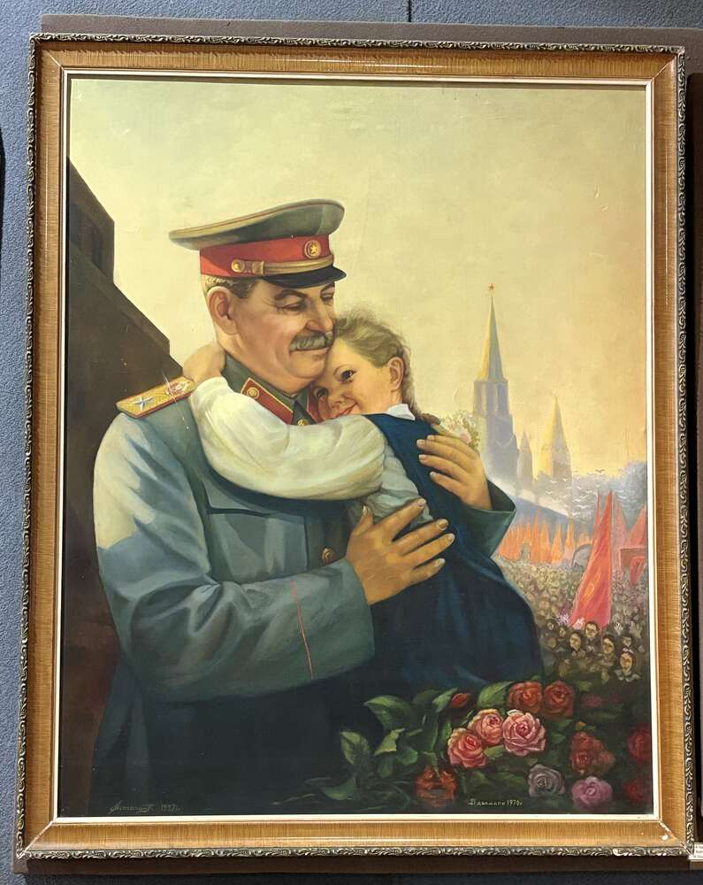
Stalin as caretaker: a painting showing him embracing a child in front of the Kremlin, surrounded by cheering crowds with red flags – a recurring propaganda motif that staged the dictator as the loving “father of the peoples”.
Controversy: After the 2008 war in the Caucasus, Georgia’s then culture minister announced that the museum would be turned into a “Museum of Russian Aggression”. For years, a sign at the entrance warned of the falsification of history. In late 2012, however, Gori’s city council voted against a redesign – and the museum stayed as it was. To this day it is the town’s most important source of tourism revenue; according to the museum, around 85% of visitors in 2019 came from abroad, a large share of them from Russia.
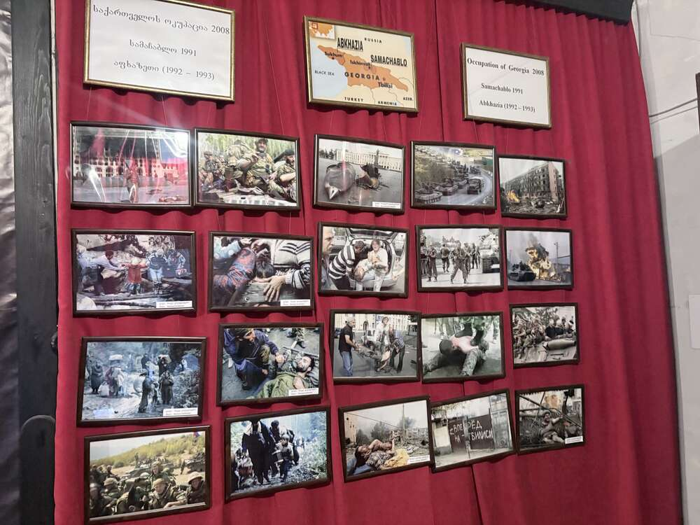
A separate exhibition area documents, with at times graphic photographs, the armed conflicts over Abkhazia (1992–93), South Ossetia/Samachablo (1991) and the Russo-Georgian War of 2008 – a far more critical, explicit counterpoint to the uncritical veneration of Stalin in the main building next door.
The railway carriage: Next to the museum stands Stalin’s personal green Pullman carriage – 83 tonnes, armor-plated – which he used for travel from 1941 onwards because of his fear of flying, including to the Tehran and Yalta conferences. The carriage was handed over to the museum in 1985; today visitors can view the sleeping compartment, bathroom and meeting room.
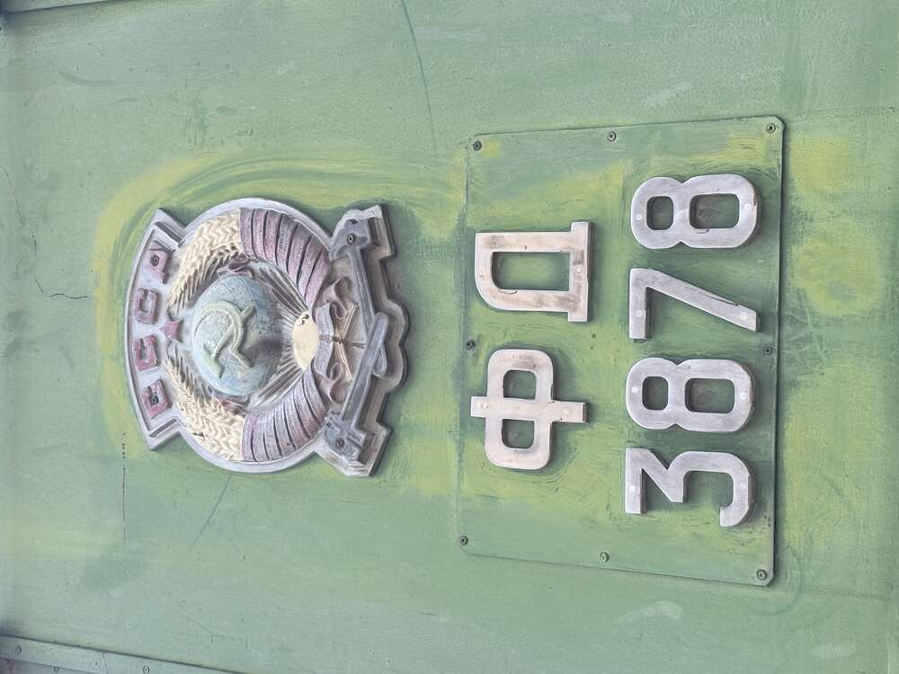
Soviet state emblem and builder’s plate “ΦΔ 3878” on one of the historic locomotives on the museum grounds – “ΦΔ” stands for Felix Dzerzhinsky, after whom this Soviet locomotive class of the 1930s was named.
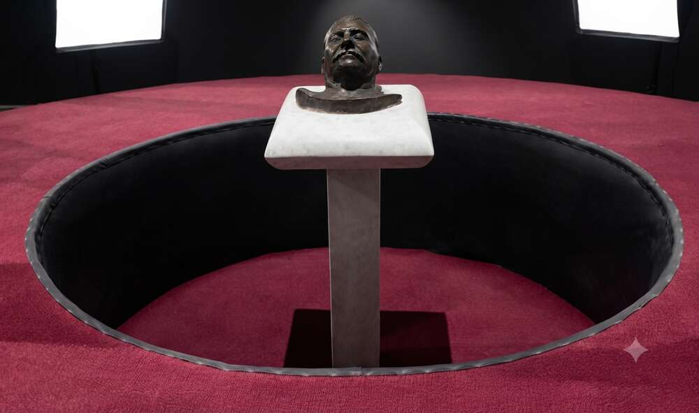
The tour traditionally ends with Stalin’s death mask on its own pedestal – one of the best-known of twelve copies made after his death in 1953, staged almost like a relic.
Mtskheta: About 20 km north of Tbilisi, at the confluence of the Mtkvari (Kura) and Aragvi rivers – for almost 1,000 years, until the 6th century, the capital of the Kingdom of Iberia, and to this day the spiritual heart of Georgia. Together with Jvari, the historical monuments of Mtskheta have been on the UNESCO World Heritage list since 1994/96.
Svetitskhoveli Cathedral: The “Cathedral of the Living Pillar”, built in 1010–1029 by the Georgian architect Arsukidze, is the second-largest church in Georgia and for centuries served as the coronation and burial church of the Georgian kings. The name goes back to a legend: a resident of Mtskheta is said to have brought Christ’s robe home after the crucifixion; his sister Sidonia died at the sight of it, the robe could not be pried from her hands, and she was buried with it. A cedar grew over her grave, and from its wood Saint Nino had a pillar made for the first church – but one pillar simply refused to be raised, until an angel appeared at night and lifted it into place. It has been considered “life-giving” ever since.
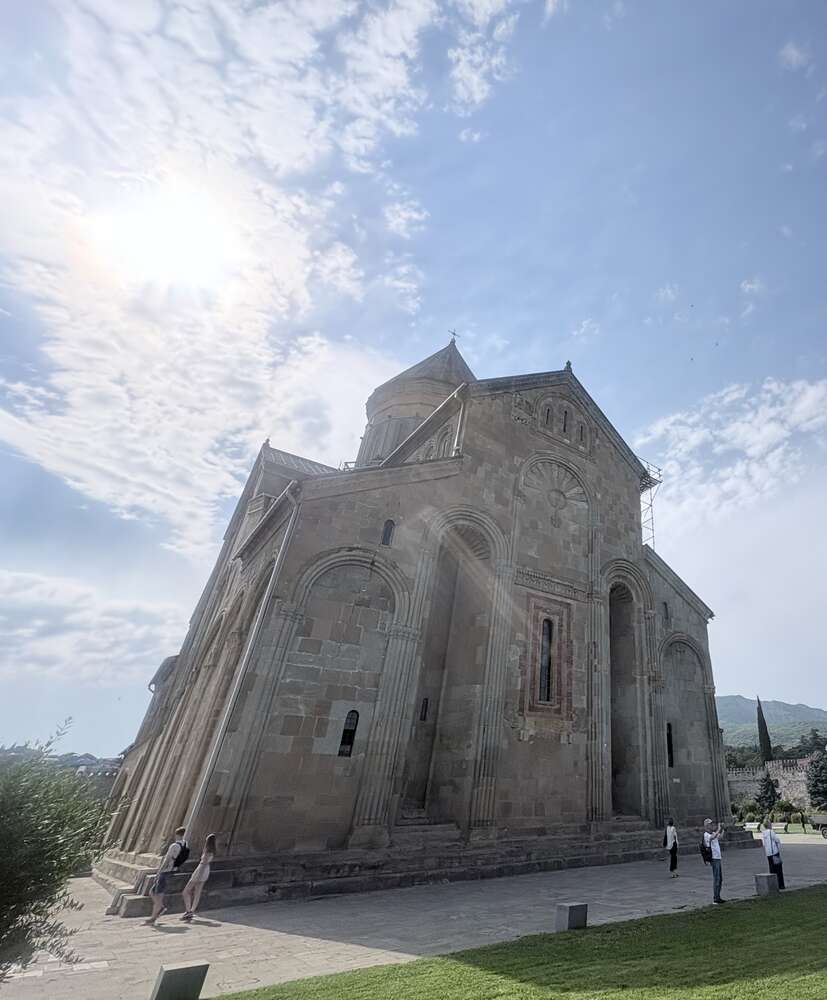
The cathedral of yellow sandstone, surrounded by a five-meter-high crenellated defensive wall built in 1787 under King Erekle II – half church, half fortress.
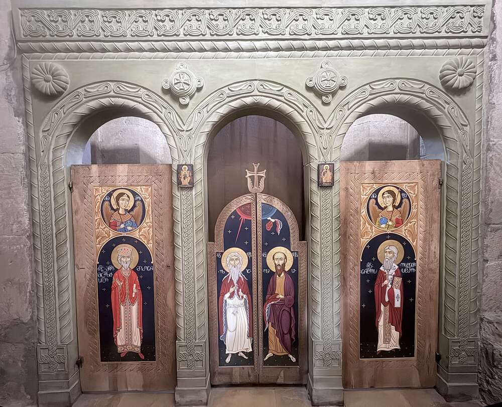
Richly decorated doors of the iconostasis with painted figures of saints, framed by classic Georgian stonemasonry – tendril ornaments, crosses and rosettes in the finest relief.
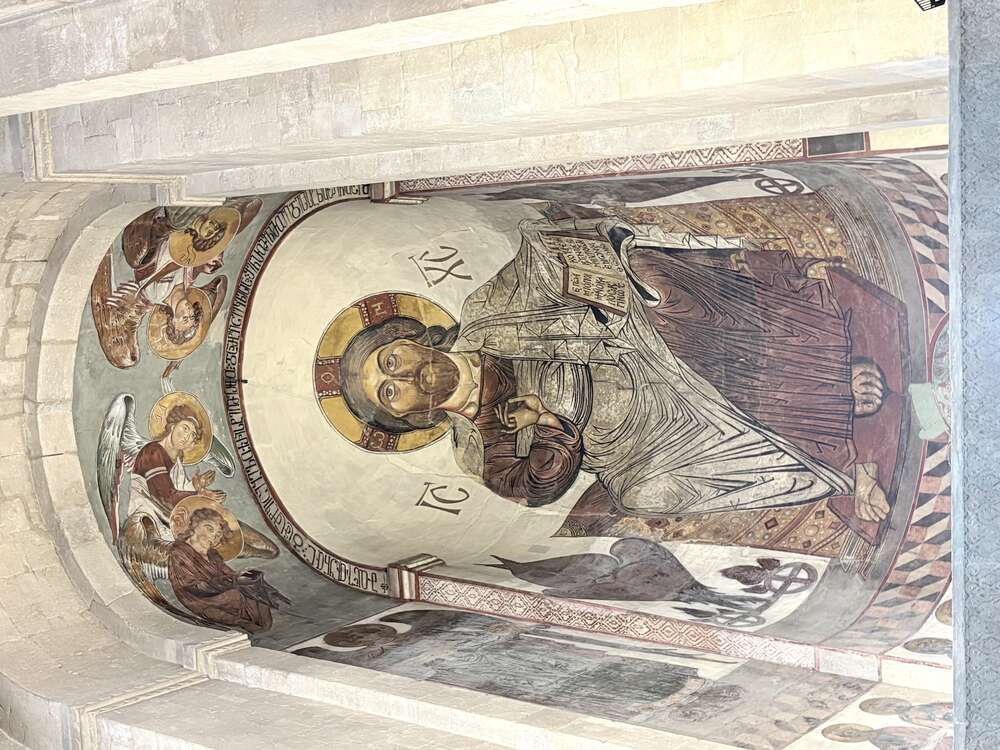
Christ Pantocrator in the apse, surrounded by angels and an inscription in the old Georgian Asomtavruli script – one of the most striking frescoes inside the cathedral.
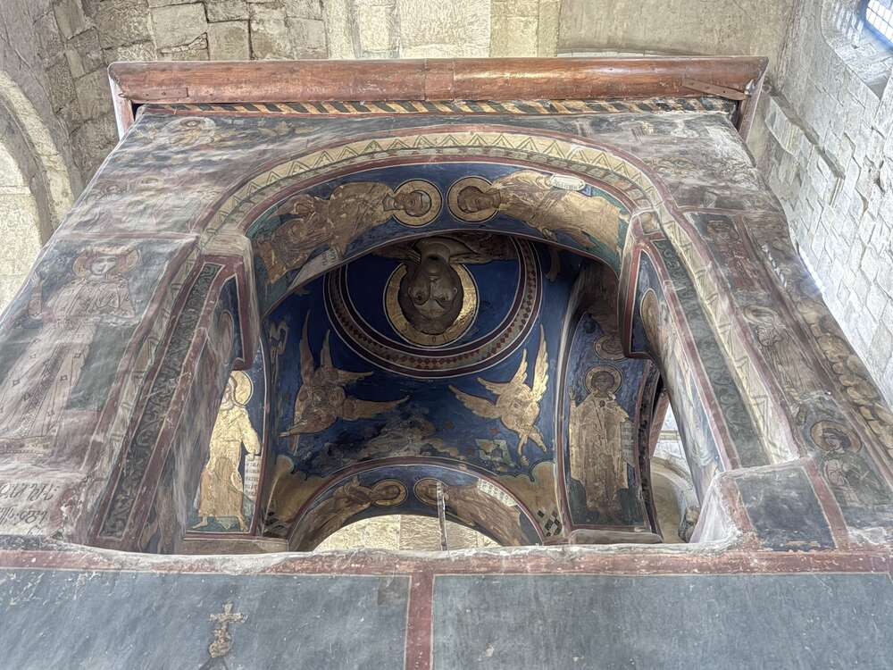
Looking up into one of the dome niches with depictions of angels – most of the painted decoration dates from later phases, as the cathedral was destroyed and rebuilt several times over the centuries (among others during Timur’s invasions).
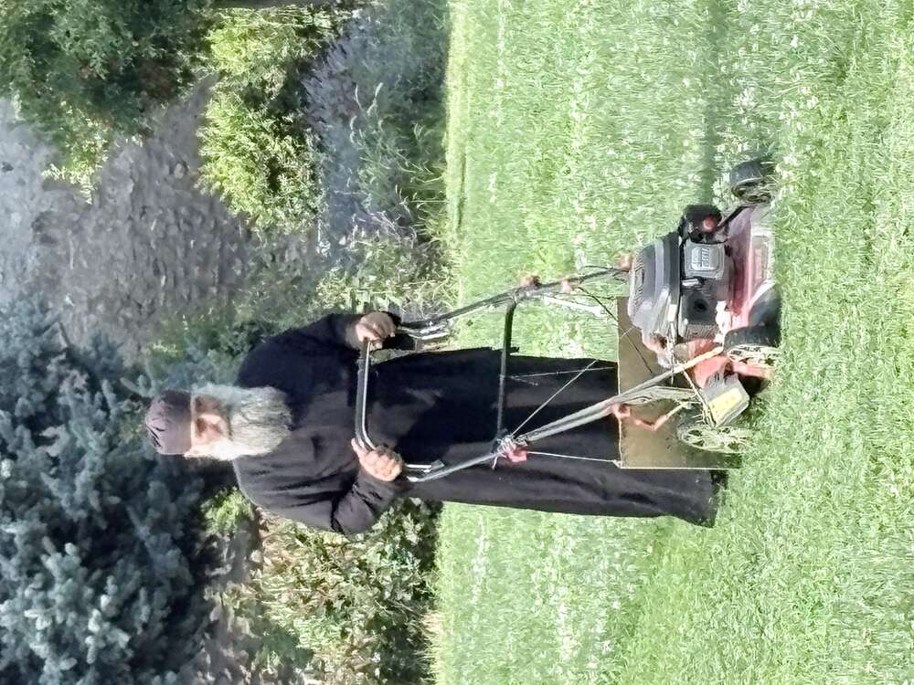
Monastic everyday life beyond the grand history: a monk mowing the lawn on the cathedral grounds – an image that pleasantly grounds one’s awe at 1,000 years of history.
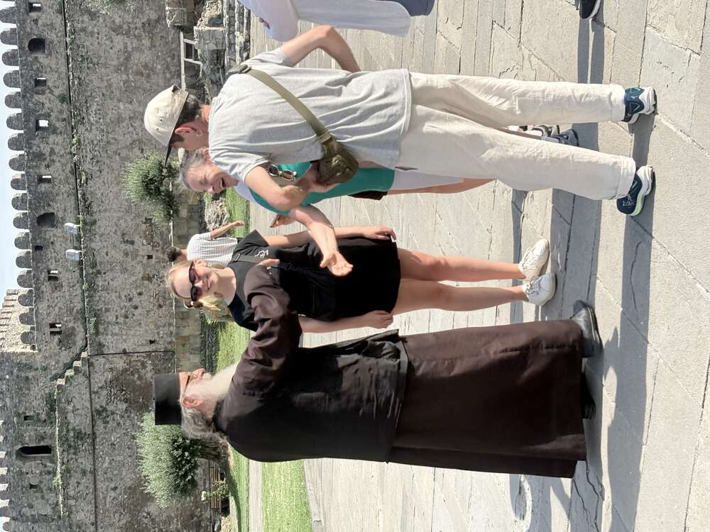
A cleric warmly welcomes our group in front of the defensive wall – for all its reverence for the holy sites, the Georgian Orthodox Church has a remarkably open, easygoing way with visitors.
Jvari Monastery: Perched high on a rocky spur above the confluence of the Mtkvari and Aragvi, with one of Georgia’s most famous panoramic views. According to tradition, Saint Nino erected a wooden cross here as early as the 4th century; the present cross-domed church, built between 586 and 605, is considered the oldest of its kind in Georgia and served as the architectural model for countless later churches across the country. The Georgian name “Jvari” simply means “cross”.
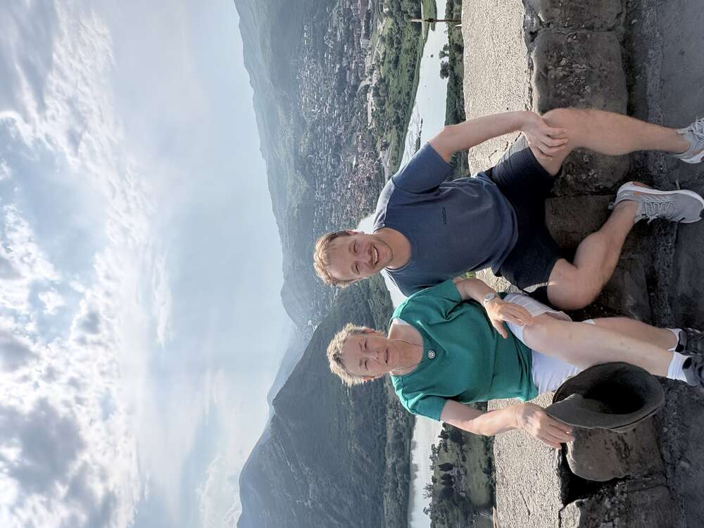
The view that makes Jvari one of the most photographed places in Georgia: down onto Mtskheta and the confluence, where the murky Mtkvari and the clearer Aragvi merge. The Russian poet Mikhail Lermontov set his 1839 poem “Mtsyri” here, in which a young novice flees from this very monastery.
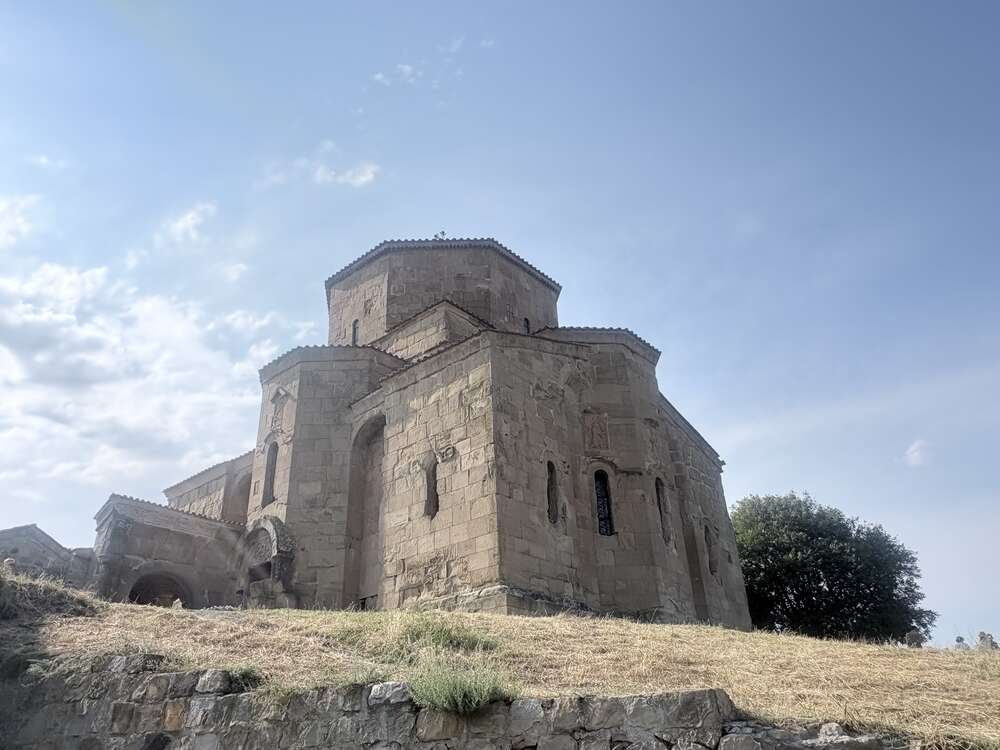
The plain, octagonal cross dome of 6th-century Jvari – in contrast to the richly painted Svetitskhoveli Cathedral down in the valley, deliberately kept bare and unadorned.
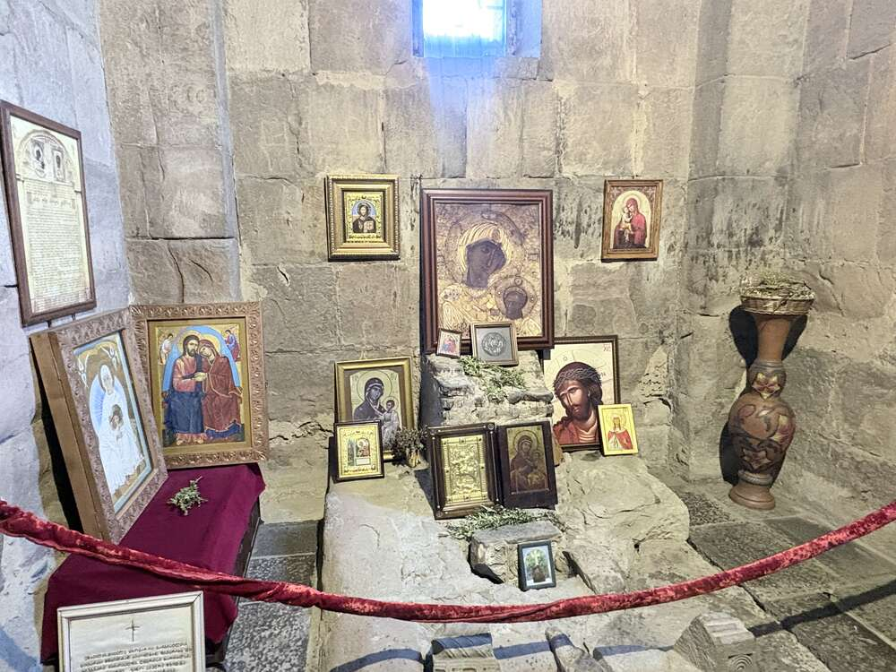
In the austere interior, a small corner adorned with icons and candles marks the spot where Saint Nino’s original cross is said to have once stood – to this day a place of pilgrimage and one of the most spiritually charged sites in Georgia.